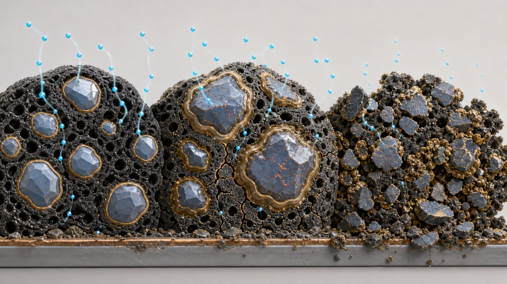

A
机械：硅在“呼吸”
嵌锂带来巨大体积变化，产生应力、裂纹和颗粒粉化。黏结网络疲劳后，部分硅与导电碳或集流体失去接触，成为“有材料、用不上”的孤岛。
Silicon–carbon anode · visual explainer
硅碳负极在前期可能只表现为缓慢衰减；当裂纹、SEI 增厚、锂库存损失与传输阻力互相强化，电极会进入“膝点”区，随后可用容量快速下坠。
用一分钟看懂 ↓
硅在嵌锂时显著膨胀、脱锂时收缩。一次循环造成的损伤也许很小，但数百次循环会逐步破坏颗粒、黏结剂、导电剂、孔道和界面膜。
在这些网络仍连通时，电池看起来只是“慢慢老”；一旦电子或离子通路低于临界连通度，更多硅同时变得不可访问，极化又会进一步放大，于是容量曲线出现明显拐点。
工程上常把这个拐点称为 knee point（膝点）。它是表现，不是单一机理的名字。
嵌锂带来巨大体积变化，产生应力、裂纹和颗粒粉化。黏结网络疲劳后，部分硅与导电碳或集流体失去接触，成为“有材料、用不上”的孤岛。
SEI 本应是保护膜；但硅不断胀缩会把膜拉裂，裸露的新表面再次分解电解液、消耗可循环锂，膜也越来越厚、越来越不均匀。
开裂、脱粘、孔隙重排和 SEI 堆积会同时破坏电子渗流网络与电解液浸润通道。连通度接近临界点时，小变化也能造成大片活性区失联。
半电池中的锂金属像“无限补给”；真实全电池的锂来自正极。每次副反应拿走一点锂，累计到余量不足时，可充放容量会明显下滑。
在膝点之前，电池尚能靠多余导电路径、剩余孔隙和电压余量维持额定测试容量。但当截止电压更早被极化触发，或关键网络断开时，原本还能反应的材料也来不及反应。
容量跳水 ≠ 某一圈突然产生全部损伤；更常见的是，累积损伤在那一圈开始“显性化”。
重要：仅凭容量曲线不能唯一归因。正极衰退、电解液干涸、内短路、测试温漂和 BMS 估算偏差，也可能制造“跳水”外观。
限制硅尺寸和利用深度，采用多孔、核壳或受限结构，减少应力集中。
选择能承受反复应变的黏结体系，维持导电网络并控制面密度与压实。
通过电解液、添加剂和表面包覆减少反复破膜与持续副反应。
合理设计 N/P、预锂化、压力与孔隙；避免低温高倍率和过深嵌锂叠加。
TAKEAWAY
硅颗粒是工厂，导电剂是电网，孔隙是道路，SEI 是城墙，活性锂是流动资金。前期坏几条支路，城市还能运转；当电网、道路和资金同时逼近下限，整片城区就会停摆——这就是容量“跳水”。
本文讨论的是液态电解液锂离子电池中的硅/石墨或硅碳复合负极；固态体系还会叠加固–固界面接触和固态电解质力化学失效。图和容量曲线均为机制示意，不代表某一具体电芯数据。